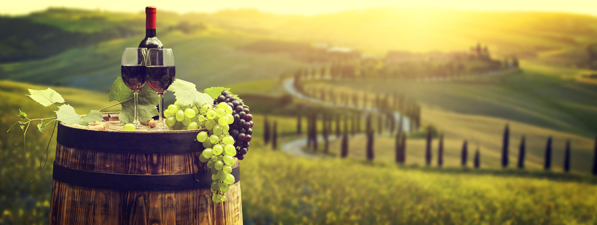
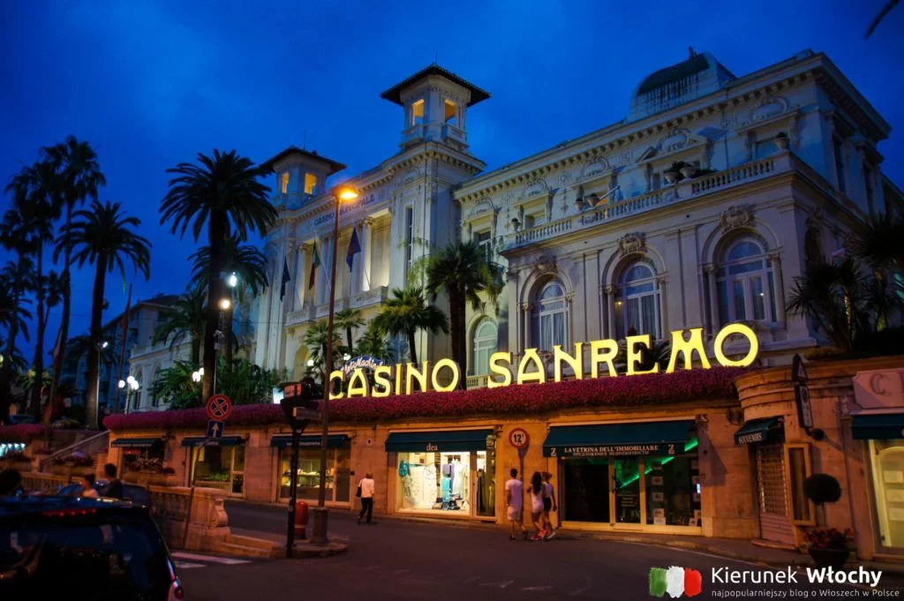
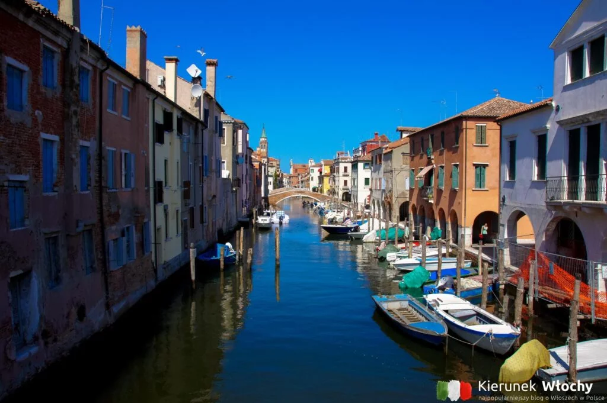

Wina z których niewątpliwie słynie ten region to: Barolo, Barbera, Dolcetto, Nebbiolo. Wenecja Euganejska (region Veneto), szczycący się produkcją wina na skalę przemysłową. Najsłynniejsze białe i czerwone wina tego regionu to Soave, Valpolicella, Amarone, Bardolino, Prosecco, Recioto.

DZIEŃ 5
Zwiedzanie słynnego kasyna Sanremo i próbowanie szczęścia.
Udanie się do winnic w regionie Liguria i degustacja lokalnych win, takich jak Cinque Terre lub Pigato.
Wieczorny spacer po nadmorskiej promenadzie i skosztowanie regionalnych dań kuchni liguryjskiej.

DZIEŃ 6-7
Wizyta w "Małej Wenecji" i spacer po wąskich uliczkach z kolorowymi domami rybackimi.
Wyprawa łodzią do pobliskiej Wenecji i zwiedzanie słynnych atrakcji, takich jak Plaza Świętego Marka i Kanał Wielki.
Degustacja lokalnego wina Prosecco lub Refosco w winnicach w okolicy Chioggia.